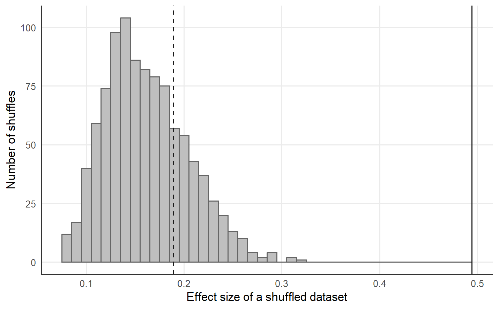

7 The permutation test
The permutation test of Necessary Condition Analysis (NCA) asks whether an empty zone of the observed size could arise when the condition X and the outcome Y are independent (Dul et al. 2020; Good 2005). Quantile Necessary Condition Analysis (QNCA) keeps the test and applies the test to the effect size at a stated tolerance (Deja 2026b). The empty zone is the part of the scope rectangle that lies left of the necessity frontier, in the upper left of the scatter of X against Y.
7.1 The statistic of the test
For an outcome target y, QNCA takes the k cases with Y >= y and reports the condition value of rank \(h = \max\{1, \lceil k(1 - \pi) \rceil\}\) among the k cases. The tolerance pi in (0, 1] fixes the share 1 - pi of successful cases that may sit below the requirement, and at pi = 1 the requirement is the lowest condition value among the successful cases, the CE-FDH ceiling of NCA (Dul 2016). The running maximum over the outcome grid makes the frontier non-decreasing, and under a fixed scope the frontier takes the upper condition bound \(x_{\max}\) at the targets above the largest observed outcome. The effect size d_pi divides the area of the empty zone by the area of the scope rectangle \([x_{\min}, x_{\max}] \times [y_{\min}, y_{\max}]\) (Deja 2026b).
7.2 Shuffles of the outcome
The test shuffles the outcome against the condition B times. A shuffle keeps the condition values and the outcome values of the sample and pairs the two sets at random, and the random pairing removes the dependence of the outcome on the condition. For each shuffle b, the package recomputes the whole estimator, namely the raw quantile frontier, the monotone envelope, the carry-forward of the fixed scope and the area, and obtains the effect size \(d_\pi^{(b)}\) (Deja 2026b). The p-value counts the shuffles with an effect size at least as large as the observed effect size \(d_\pi^{\text{obs}}\):
\[ p_\pi = \frac{1 + \#\{b : d_\pi^{(b)} \ge d_\pi^{\text{obs}}\}}{B + 1}. \]
The added one counts the observed labelling as one member of the randomisation distribution and keeps a p-value from sampled shuffles above zero (Phipson and Smyth 2010). The recomputation of the frontier inside every shuffle keeps the statistic of the test equal to the reported statistic, because a frontier held fixed while shuffled outcomes are rescored would test a different statistic (Deja 2026b).
7.3 The test on the synthetic dataset
The synthetic dataset of 200 cases of the qnca repository has a condition and an outcome on a scale from 0 to 100, and the analysis fixes the scope at [0, 100] x [0, 100]. The calls draw B = 999 shuffles at pi = 1 and at pi = 0.95, and set.seed() fixes the shuffles of R.
library(qnca)
d <- read.csv("https://raw.githubusercontent.com/MarekDejaUJ/qnca/main/data/qnca_dataset_n200.csv")
scope <- c(0, 100, 0, 100)
set.seed(2026)
strict <- qnca(d$X, d$Y, pi = 1, B = 999, scope = scope)
tolerant <- qnca(d$X, d$Y, pi = 0.95, B = 999, scope = scope)
data.frame(pi = c(1, 0.95), d_pi = c(strict$d_pi, tolerant$d_pi),
p_pi = c(strict$p_pi, tolerant$p_pi))
#> pi d_pi p_pi
#> 1 1.00 0.4941481 0.001
#> 2 0.95 0.5406425 0.001
1 / (999 + 1)
#> [1] 0.001Both p-values equal 0.001, the floor \(1/(B + 1)\) of 999 shuffles. A p-value at the floor states that every shuffled effect size stayed below the observed effect size, and a larger B lowers the floor. The test runs at each tolerance separately, so each tolerance receives a separate p-value, and the analyst fixes pi before inspecting any p-value (Deja 2026b).
7.4 The distribution under independence
A matrix of shuffles shows the distribution behind the p-value. Each row of the matrix perm lists the case numbers 1 to 200 in a random order, and the row b pairs the condition of case i with the outcome of case perm[b, i].
n <- nrow(d)
set.seed(11)
perm <- t(replicate(999, sample.int(n)))
null_d <- apply(perm, 1, function(rows) {
qnca(d$X, d$Y[rows], pi = 1, B = 0, scope = scope)$d_pi
})
summary(null_d)
#> Min. 1st Qu. Median Mean 3rd Qu. Max.
#> 0.07647 0.12986 0.15616 0.16141 0.18903 0.31777The shuffled datasets show an empty zone as well: at pi = 1, the shuffled effect sizes range from 0.076 to 0.318 with a median of 0.156. The observed effect size of 0.494 exceeds the largest shuffled value.
A dataset with the dependence removed shows the other outcome of the test. The cases of the synthetic dataset are independent draws, so pairing the condition of case i with the outcome of case i + 100, counted cyclically, removes the dependence of the outcome on the condition and keeps both sets of values.
Y_shift <- d$Y[c(101:200, 1:100)]
set.seed(2026)
shift_fit <- qnca(d$X, Y_shift, pi = 1, B = 999, scope = scope)
c(d_pi = shift_fit$d_pi, p_pi = shift_fit$p_pi)
#> d_pi p_pi
#> 0.1893848 0.2200000The shifted dataset has an effect size of 0.189 and a p-value of 0.22, so an empty zone of 0.189 arises often under independence. The shifted outcomes are a permutation of the observed outcomes, and the two datasets therefore share the distribution of shuffled effect sizes.
ggplot(data.frame(d_pi = null_d), aes(d_pi)) +
geom_histogram(binwidth = 0.01, fill = "grey75", colour = "grey40") +
geom_vline(xintercept = strict$d_pi, linetype = "solid", colour = "grey10") +
geom_vline(xintercept = shift_fit$d_pi, linetype = "dashed", colour = "grey10") +
labs(x = "Effect size of a shuffled dataset", y = "Number of shuffles")
Figure 7.1: Effect sizes d_pi at pi = 1.00 of 999 shuffles of the outcome against the condition in the synthetic dataset of 200 cases, fixed scope [0, 100] x [0, 100], grid of 50 outcome targets. The solid line marks the observed effect size, and the dashed line marks the effect size of the dataset with the outcomes shifted by 100 cases.
7.5 Reproducible p-values
A p-value from random shuffles depends on the shuffles drawn. In R, the argument permutations takes a matrix with one row per shuffle, each row a permutation of the case numbers 1 to n, and the same matrix gives the same p-value in every run.
c(first = qnca(d$X, Y_shift, pi = 1, scope = scope, permutations = perm)$p_pi,
second = qnca(d$X, Y_shift, pi = 1, scope = scope, permutations = perm)$p_pi)
#> first second
#> 0.213 0.213Both calls with the matrix perm return the p-value 0.213 for the shifted dataset. Python and Julia take the argument seed and draw the shuffles from the random generator of each language. A seeded p-value repeats within one language and differs between languages, because the generators of the three languages produce different shuffles. One shared permutation matrix gives identical p-values in the three implementations. The file cross_language_agreement.csv of the repository records the check with a shared matrix of 1999 shuffles for four datasets and three tolerances.
agree <- read.csv("https://raw.githubusercontent.com/MarekDejaUJ/qnca/main/data/cross_language_agreement.csv")
agree[agree$dataset == "n200", c("pi", "B", "p_pi_R", "p_pi_python", "p_pi_julia")]
#> pi B p_pi_R p_pi_python p_pi_julia
#> 4 1.00 1999 5e-04 5e-04 5e-04
#> 5 0.95 1999 5e-04 5e-04 5e-04
#> 6 0.90 1999 5e-04 5e-04 5e-04
c(rows = nrow(agree), equal = sum(as.logical(agree$p_values_equal)))
#> rows equal
#> 12 12The three implementations report the same p-value in each of the 12 rows of the file.
7.6 Reading the p-value
A small p_pi together with a substantively meaningful d_pi supports a necessity interpretation against independence at the stated tolerance (Dul et al. 2020; Deja 2026b). At pi = 1, the test inherits the outlier-fragility of the CE-FDH ceiling, and resistance to exceptional successful cases arises at pi < 1 (Deja 2026b). The finite-sample statistic is discrete, because quantiles, extreme observations and the envelope enter the statistic, and the calibration screens of Deja (2026b) cover a narrow set of null designs.
The independence null removes all association between the two variables. Correlated and skewed variables can produce an empty zone of similar size without an explicit attainability floor (Sorjonen et al. 2017; Sorjonen and Melin 2019). The reply of Dul et al. (2019) holds that the permutation test supports a pattern in the observed data and leaves the substantive theory open. Spuriousness, an empty zone produced by correlation, skewness or a sufficiency relation, is a failure mode different from outlier-fragility, and the function spuriousness_band() benchmarks d_pi against the dependence-matched reference band, which preserves the empirical marginals and a smooth monotone rank dependence (Deja 2026b). The reference band is a proposed diagnostic with operating characteristics still to be established.
7.7 The same test in Python and Julia
The Python package qnca and the Julia package QuantileNecessity take the argument seed, and each chunk runs the test on the observed and on the shifted dataset.
from urllib.request import urlopen
import numpy as np
from qnca import qnca
url = "https://raw.githubusercontent.com/MarekDejaUJ/qnca/main/data/qnca_dataset_n200.csv"
X, Y = np.loadtxt(urlopen(url), delimiter=",", skiprows=1, unpack=True)
scope = (0.0, 100.0, 0.0, 100.0)
for pi in (1.0, 0.95):
res = qnca(X, Y, pi=pi, B=999, scope=scope, seed=2026)
print(pi, res.d_pi, res.p_pi)
Y_shift = np.concatenate((Y[100:], Y[:100]))
print([qnca(X, Y_shift, pi=1.0, B=999, scope=scope, seed=2026).p_pi for _ in range(2)])
#> 1.0 0.49414805999615674 0.001
#> 0.95 0.540642522189369 0.001
#> [0.212, 0.212]using QuantileNecessity, Downloads, DelimitedFiles
url = "https://raw.githubusercontent.com/MarekDejaUJ/qnca/main/data/qnca_dataset_n200.csv"
data = readdlm(Downloads.download(url), ',', Float64; skipstart = 1)
X, Y = data[:, 1], data[:, 2]
scope = (0.0, 100.0, 0.0, 100.0)
for p in (1.0, 0.95)
res = qnca(X, Y; pi = p, B = 999, scope = scope, seed = 2026)
println(p, " ", res.d_pi, " ", res.p_pi)
end
Y_shift = Y[vcat(101:200, 1:100)]
println([qnca(X, Y_shift; pi = 1.0, B = 999, scope = scope, seed = 2026).p_pi for _ in 1:2])
#> 1.0 0.49414805999615674 0.001
#> 0.95 0.5406425221893691 0.001
#> [0.231, 0.231]The effect sizes of Python and Julia equal the R values, and the p-values of the observed dataset agree at the floor of 0.001 in the three languages, because every shuffled effect size stays below the observed effect size. The seeded p-value of the shifted dataset repeats within each language and takes the values 0.212 in Python, 0.231 in Julia and 0.22 in R, since each language draws other shuffles from the same seed.